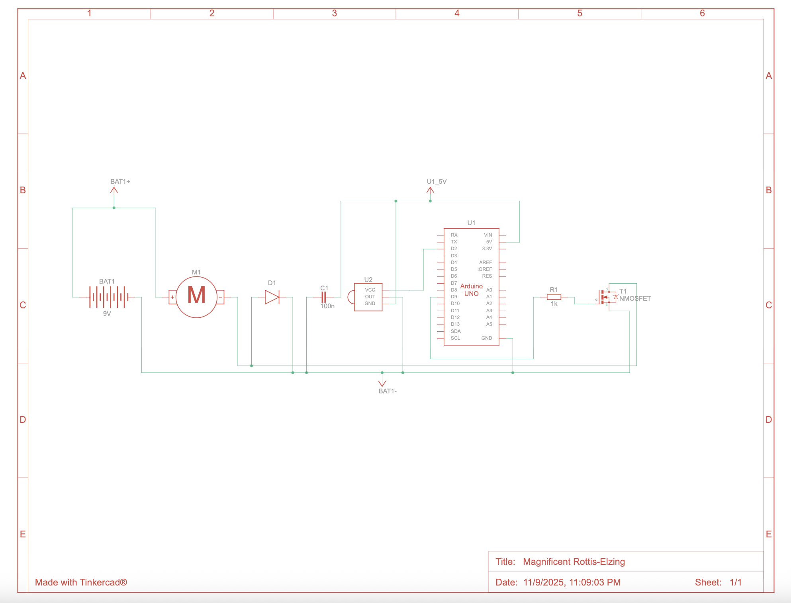

Overview
This project explores the use of transistors and higher voltage control with Arduino. The goal was to safely drive larger loads, such as a motor or LED array, using a small signal from the microcontroller. By introducing a transistor as a switch and managing voltage levels, the circuit demonstrates how to control higher power components without damaging the Arduino. This assignment also reinforces understanding of current flow, base resistance, and transistor saturation in practical applications.
Schematic (show values & calculation)
This schematic diagram shows the transistor circuit configuration and voltage calculations for Assignment 5. A 220 Ω resistor was used on the transistor’s base to limit current and protect both the Arduino and the transistor from excessive draw. Additionally, a 100 µF capacitor was added to help filter and stabilize voltage fluctuations, reducing interference and ensuring smoother operation during switching.
This image shows the complete breadboard setup connecting the Arduino, IR receiver, transistor, and motor. The layout demonstrates how the components were arranged for testing and functionality verification.
Firmware Code
// Include the IRremote library so the Arduino can read signals from the IR receiver
#include
// --- Pin setup and main constants ---
const uint8_t IR_PIN = 2; // IR receiver OUT pin connected to Arduino digital pin 2
const uint8_t MOTOR = 9; // MOSFET gate pin connected to Arduino digital pin 9 (PWM capable)
const uint8_t ON_DUTY = 200; // Motor speed (0–255). Using 200 gives a strong speed but not full power.
// NOTE: Setting PWM to a fixed increment like this helps avoid signal interference
// that can happen with variable-speed control through IR signals.
const unsigned long DEBOUNCE = 10; // Debounce time (ms) to filter out repeat noise from the IR sensor
// --- Variables for IR control ---
uint16_t powerCode = 69; // The IR code for your Power button (change if your remote uses a different one)
uint16_t lastCmd = 0; // Stores the last valid (non-zero) IR command for handling repeats
bool on = false; // Tracks whether the fan is currently ON or OFF
unsigned long lastToggle = 0;// Records the last time the fan was toggled (used for debounce)
// --- Helper function to apply PWM signal to the motor ---
inline void apply() {
// If the fan is ON, apply the PWM value (ON_DUTY)
// If OFF, write 0 to stop the motor
analogWrite(MOTOR, on ? ON_DUTY : 0);
}
// --- Setup runs once when Arduino starts ---
void setup() {
Serial.begin(115200); // Start serial for debugging (optional)
IrReceiver.begin(IR_PIN, ENABLE_LED_FEEDBACK); // Start IR receiver on defined pin
pinMode(MOTOR, OUTPUT); // Set motor pin as OUTPUT
apply(); // Ensure motor starts in the OFF state
Serial.println(F("IR Fan ON/OFF — press your button to toggle."));
Serial.println(F("PWM set in fixed increments to reduce IR interference."));
}
// --- Loop runs repeatedly ---
void loop() {
// If no IR signal received, pause briefly and check again
if (!IrReceiver.decode()) { delay(2); return; }
// Read the data from the IR receiver
auto &r = IrReceiver.decodedIRData;
uint16_t cmd = r.command ? r.command : lastCmd; // Use last command if this is a repeat signal
unsigned long now = millis(); // Current time in milliseconds
// If powerCode is set to 0, the first valid button press will auto-learn that code
if (powerCode == 0 && cmd && !(r.flags & IRDATA_FLAGS_IS_REPEAT)) {
powerCode = cmd;
Serial.print(F("Learned powerCode = "));
Serial.println(powerCode);
}
// If the received command matches the power button and debounce time passed
if (cmd == powerCode && (now - lastToggle) > DEBOUNCE) {
on = !on; // Flip ON/OFF state
lastToggle = now; // Update debounce timer
apply(); // Apply the new state to the motor
Serial.println(on ? F("Fan: ON") : F("Fan: OFF")); // Print current state
}
// Store last valid command to use if next frame is a repeat signal
if (r.command) lastCmd = r.command;
// Tell the IR receiver to be ready for the next signal
IrReceiver.resume();
} Operation GIF

This GIF shows the transistor circuit operating in real time, demonstrating the switching and voltage behavior.